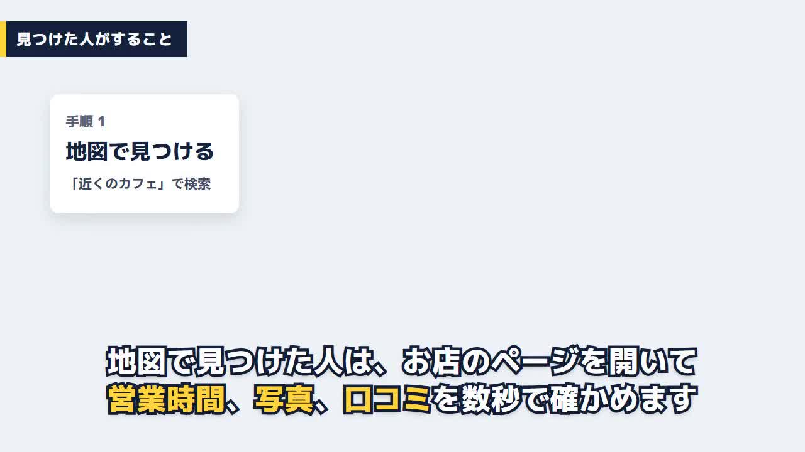
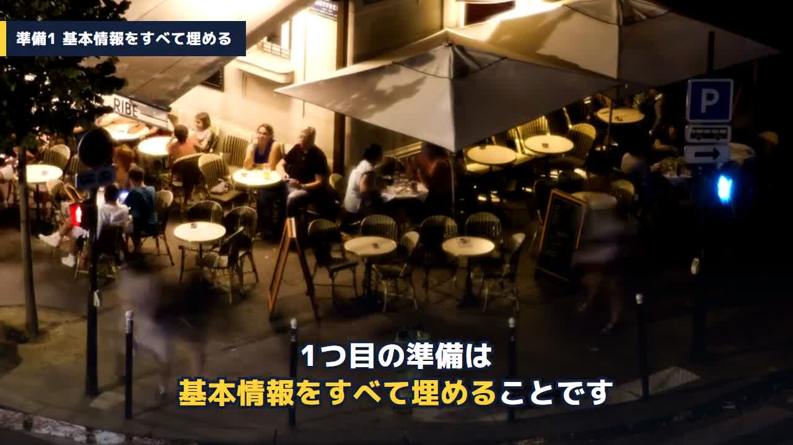
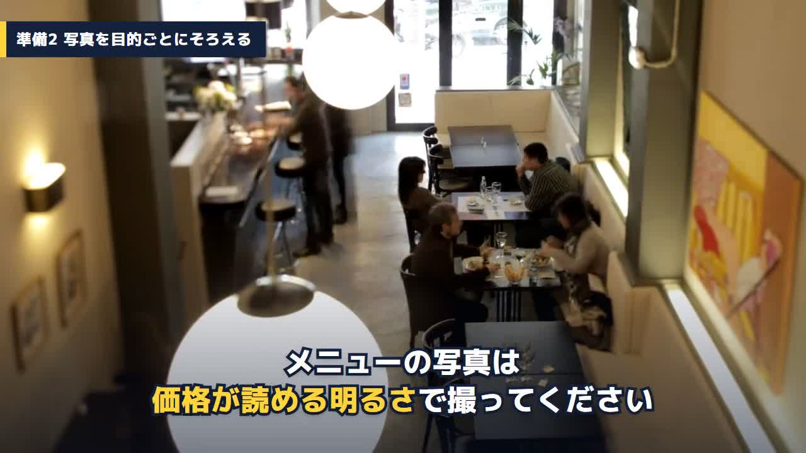
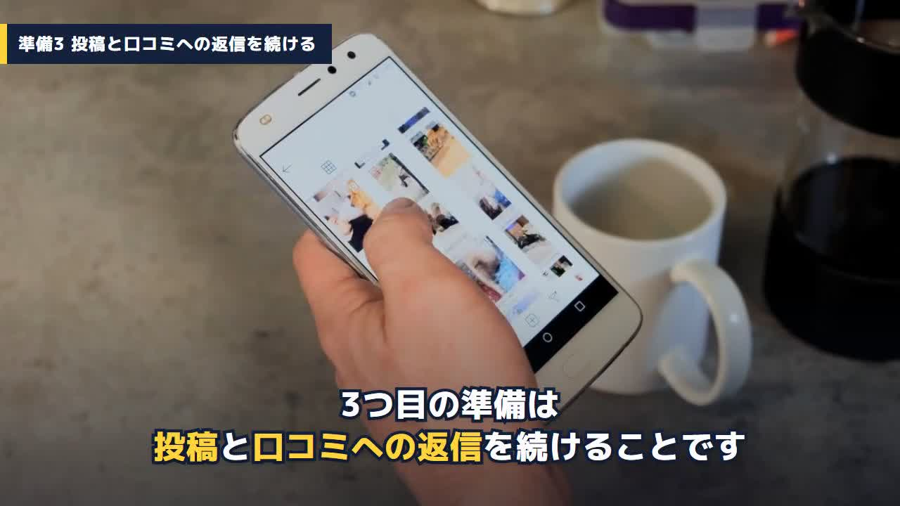
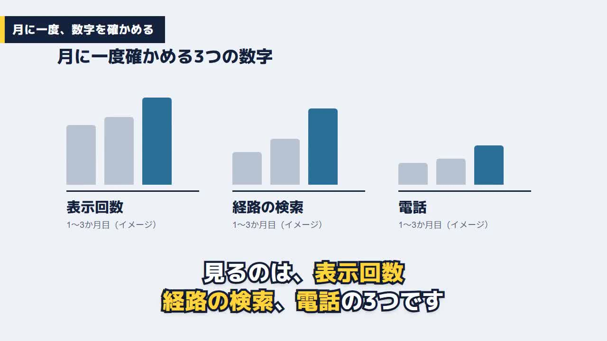
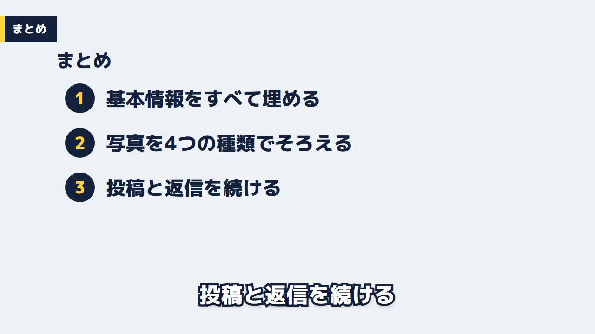

00:00 本編
再生すると音が出ます。ナレーションは音声合成です。
章のタイムライン
本編9章の見せ方です。場面写真は本編から切り出した画像です。
0:00
タイトル
紺地に題名を置き黄色の線が伸びる
0:04
導入
素材映像（地図を検索する手元）にテロップを重ねる
場面写真なし
0:25
見つけた人がすること
図解で3つの手順が順に現れ「別の店へ」の分かれ道を示す

0:51
準備1 基本情報
素材映像に図解のチェックリストを重ねる

1:25
準備2 写真
素材映像と図解で示す4種類の写真と合計20枚の数字が数え上がる

1:58
準備3 投稿と返信
素材映像にテロップを重ねる

2:24
数字の確かめ方
図解で3つの数字の棒グラフが伸びる

2:43
まとめ
図解で3つの準備を順に表示する

3:03
終わり
次の一歩の一文と出典を表示する
場面写真なし
Before／After（30秒）
同じ映像と音声で、自動字幕のままの表示（左）とデザイン済みテロップ（右）を並べています。
テロップ仕様の要点
仕様表（spec.html）からの抜粋です。値は Remotion のコードと同じです。
本文テロップの書体
M PLUS 1p ExtraBold・46px（1280×720の画面に対して）
1行と行数
1行は全角20字まで、1画面は2行まで。3行以上になる文は2行ずつのページに分けて切り替える
色と縁取り
文字は #FFFFFF、強調語は #FFD43B、縁取りは #14213D の9px。文末の「。」は表示しない
位置と出かた
画面の下から54px・左右中央。4フレームで下から10px動きながら現れ、読み終わってから0.25秒後に消える
章の見出し
左上に置く。地は #14213D、文字は #FFFFFF、左の帯は #FFD43B（幅10px）。章が変わったときだけ左から滑り込む
図解の場面
地は #EEF2F6、文字と図形は #14213D、強調は #FFD43B。要素ごとにばねで現れ、本文テロップと重ならない範囲に収める
音
ナレーションは Irodori-TTS で文ごとに合成する。BGMは Mixkit「Motivating Mornings」を音量7%で繰り返し、効果音は章の切り替わりだけに使う
制作の手順
1
台本を書く
台本を文ごとに書き、強調語を [[ ]] で囲みます。
2
音声を合成し、時刻表を作る
文ごとにナレーションを合成し、時刻表（timing.json）を作ります。
3
Remotion で配置する
時刻表に合わせて、テロップ・素材映像・図解・効果音を配置します。
4
書き出して確認する
1280×720・H.264 で書き出し、代表的な場面の画像でテロップのはみ出しと重なりを確認します。